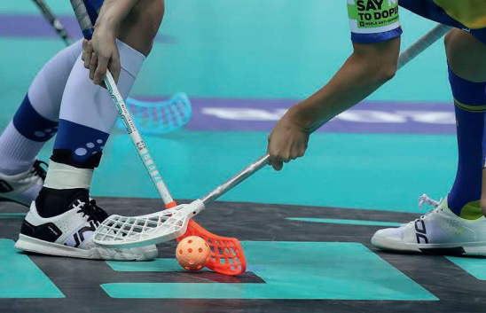

Jag är 17 år och går på åva gymnasium.
Detta är en bild på:
Jag bor i en familj om 4, min mamma Carin, pappa Leif och lillebrosan Seth. Våran främsta familjeakrtivitet som jag gillar mest är paddel pga att det är en sport som är lätt och alla i familjen är tävlingsinriktade vilket leder till en mycket intressant tävling.
Jag har gått på innebandy i ca 11 år nu. Har spelat mot de flesta lagen i stockholm. Det har funnits flera lag som är riktigt jobbiga att möta som t ex väsby pga att dom sätter sina bästa lag i den lägsta serien och vinner varje match vilket är riktigt oskönt. Innebandy, även känd som floorball, uppstod i Sverige på 1960-talet. Denna snabba och lättillgängliga sport växte snabbt i popularitet i Norden. Den kombinerar element från ishockey och bandy, men spelas inomhus med plastklubbor och en lätt, hålig boll. Officiella regler formaliserades på 1970-talet. Sporten spreds globalt och blev särskilt populär i länder som Finland och Schweiz. Internationellt erkänd av Internationella Innebandyförbundet, har sporten sedan 1996 årliga världsmästerskap för både herrar och damer.
Detta var en resa med familjen i madrid i spaninen. Vi åkte och kollade på många olika sevärdigheter och åt väldigt mycket god mat. Det coolaste vi va och kollade på var Frankos grav. Det var helt otroligt att man lyckades bygga något liknande.
{kind=link}